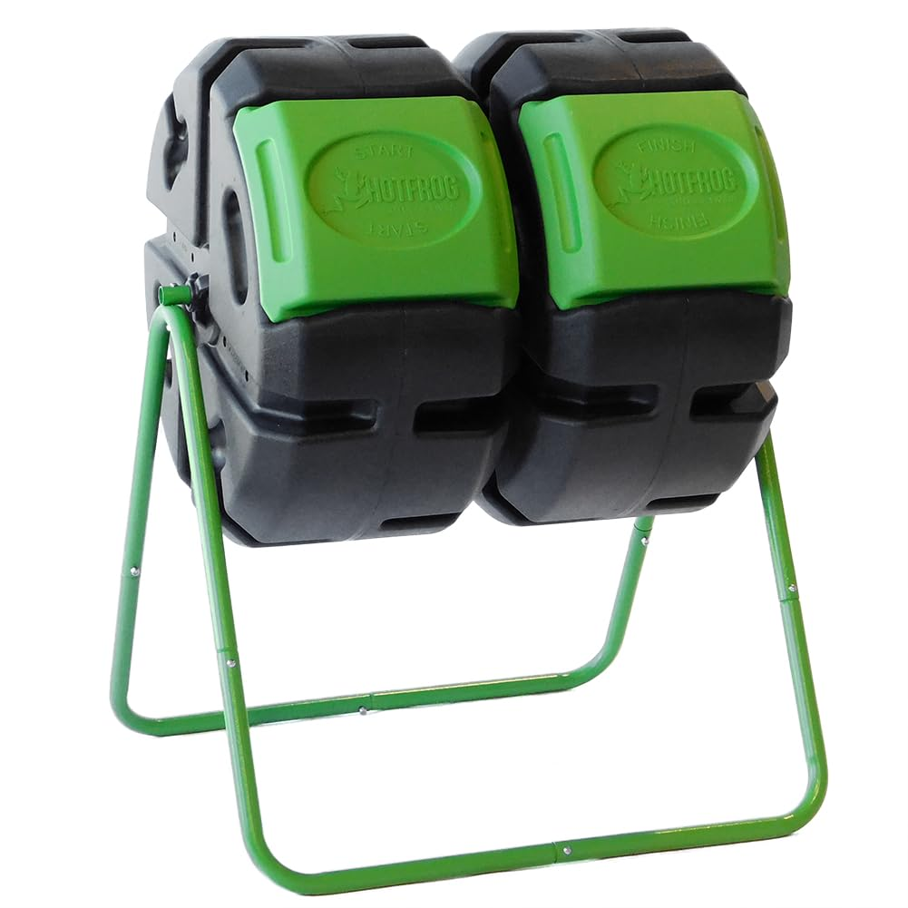

Review · Tumblers
HOTFROG Dual Body: two drums that spin on their own — half the effort of a full 37 gallons
FCMP’s answer to the IM4000’s weak point: the same total capacity and the same 30×28×36 footprint, but split into two independently rotating bodies — what the split actually buys you, who should pay roughly double for it, and who should not.
Disclosure: the Amazon links on this page are affiliate links — if you buy through them we earn a commission at no extra cost to you. It never changes the verdict below; the numbers are FCMP’s own, verified against the live listing and FCMP’s comparison table on Nov 15, 2026.
One line: pay for the HOTFROG if spinning a loaded drum is the reason you would stop turning; don’t pay it if the IM4000’s single-drum cycle already fits you.
What the HOTFROG actually changes
Every mainstream tumbler on this site’s pages has been the same machine: one octagonal drum, split into two chambers, rotating together on one axis. The HOTFROG is the exception we verified on a live listing. It mounts two separate 37-gallon-total bodies side by side on a painted galvanized steel frame, and each body rotates on its own — fill one while the other finishes, swap when done.
The case for the split is physical. When one body is a full drum of wet compost, you are rotating half that mass at a time, on its own axis, with its own handholds. FCMP’s listing copy sells exactly this — the tumbler that keeps mixing easy when the load is heavy — and it is the single clearest differentiator in the class we verified Nov 15, 2026. What it is not is more compost: total capacity is 37 gallons, same as the IM4000, in the same 30″ × 28″ × 36″ footprint.
The specs, verified
| Parameter | Value |
|---|---|
| Total capacity | 37 gallons, split across two independent bodies (5 cu ft) |
| Bodies | 2 separate tumbling composters, each rotating on its own |
| Body material | Recycled polyethylene; BPA-free, UV-inhibited |
| Frame | Painted galvanized steel, raised |
| Dimensions | 30″ L × 28″ W × 36″ H |
| Empty weight | 30 lb |
| Warranty | 1-year limited, with factory part replacement |
| Review base | 4.4 / 5 across 713 Amazon ratings (Nov 15, 2026) |
| Price | $$ tier — $145.49 and $189.99 observed across November 2026 |
Verification method and tier definitions live on the methodology page.
The two-body rhythm — and the two-week claim
FCMP’s usage copy is specific: close the doors, rotate 5–6 turns every two to three days, and in hot, sunny conditions with a proper ingredient balance compost can finish in as little as two weeks. Treat that exactly as what it is — a best-case active-phase claim under good conditions. The cure clock still runs afterward, and a half-filled drum in cool weather does not live by listing copy (the honest timeline is here).
What the two bodies genuinely change is the swap. In a one-drum tumbler, loading fresh material into a chamber that shares an axis with finishing compost means the whole heavy drum moves every time you turn. Here, the finishing body spins alone while the filling body stays put — which is also the honest place to state the evidence limit: the ergonomics case rests on the design itself and FCMP’s claims, and a 713-rating review base that is far thinner than the benchmark’s 18,737.
What the extra money buys — and what it doesn’t
Across November 2026 the HOTFROG appeared at $189.99 on its listing and $145.49 inside FCMP’s own brand-comparison table — a $$ tier price that swings roughly double the IM4000’s observed range. The premium buys turning ergonomics and a painted frame; it does not buy capacity, compost speed, or a longer warranty. If a loaded 37-gallon drum is the specific thing that would make you stop composting, you are buying the right problem’s solution. If it isn’t, the IM4000 is the same cycle at half the money.
HOTFROG vs the rest of the lineup
Against its sibling the IM4000: identical brand, footprint, and total capacity; the price is the ergonomics. Against the VIVOSUN 43: the VIVOSUN is 6 gallons more and hundreds of dollars less, but every rotation moves the whole loaded drum. The full roundup scores all seven verified tumblers side by side, and the bins page is the static alternative.
The questions, answered
Does two bodies mean 74 gallons?
No. Total capacity is 37 gallons (5 cubic feet) across the two bodies — the listing’s own published figure, verified Nov 15, 2026. The split changes how the volume moves, not how much of it you get.
How is the HOTFROG different from the IM4000?
Same brand, same 30″ × 28″ × 36″ footprint, same total capacity — but the HOTFROG’s two bodies rotate independently, so a full load of compost moves in half-drum steps. The IM4000 rotates one split drum as a unit at roughly half the price.
Does the split really save turning effort?
That is the design’s explicit purpose and FCMP’s selling point, and physically each rotation moves a smaller mass on its own axis. But the HOTFROG’s review base (713 ratings) is far smaller than the benchmark’s (18,737), so the honest evidence is the mechanism and the manufacturer’s claims, not a deep well of verified user reports.
Can it really finish compost in two weeks?
FCMP’s claim — rotate 5–6 turns every two to three days, hot sunny conditions, proper ingredient balance — is a best-case active-phase timeline. Curing still takes time, and cool or unbalanced loads take longer. See the timeline guide for what is realistic by season.
Keep reading
- The full tumblers roundup — all seven verified tumblers, specs side by side.
- FCMP IM4000 review — the single-drum benchmark at half this price.
- VIVOSUN 43-Gallon review — more capacity for less money — if comfort isn’t the constraint.
- How long composting takes — where the two-week claim actually fits.
- Best compost bins — the static alternative.